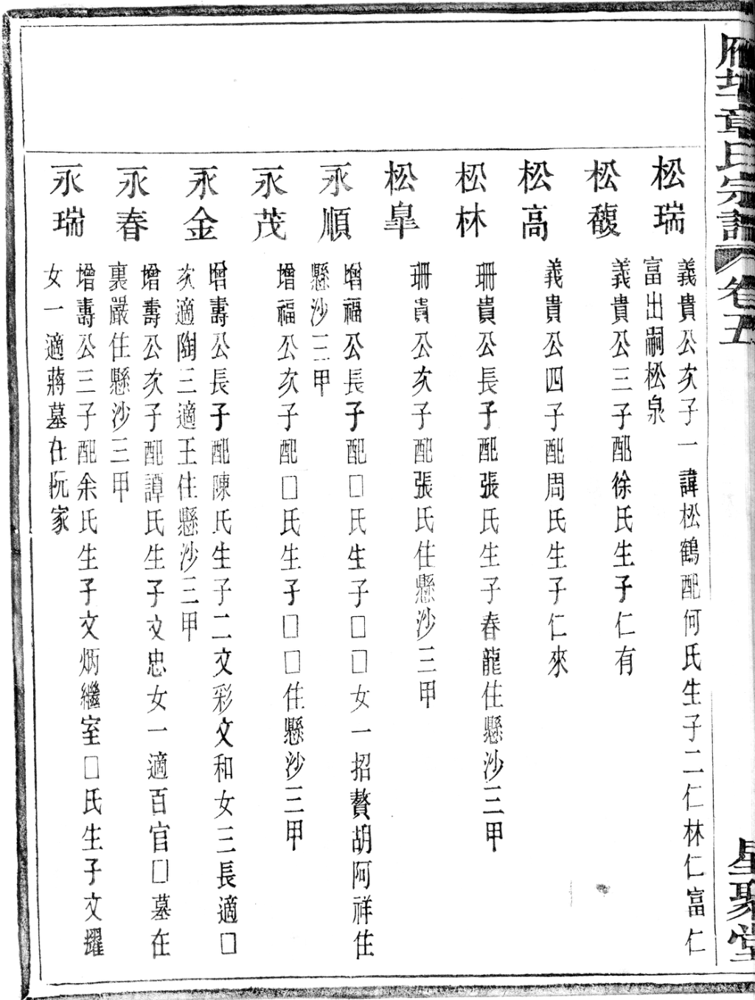
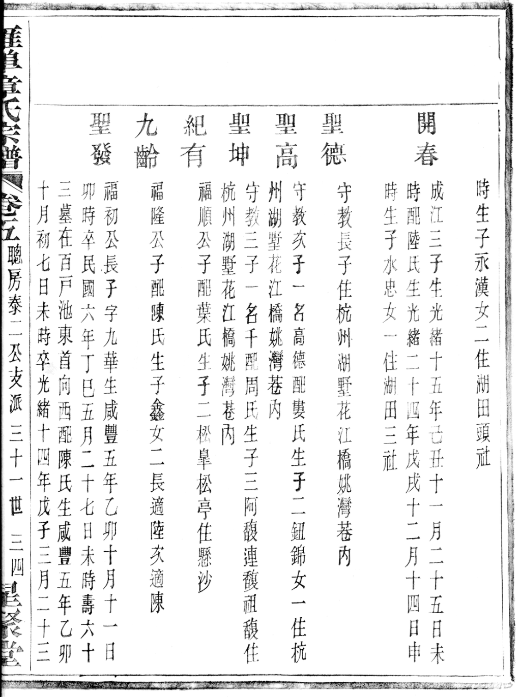
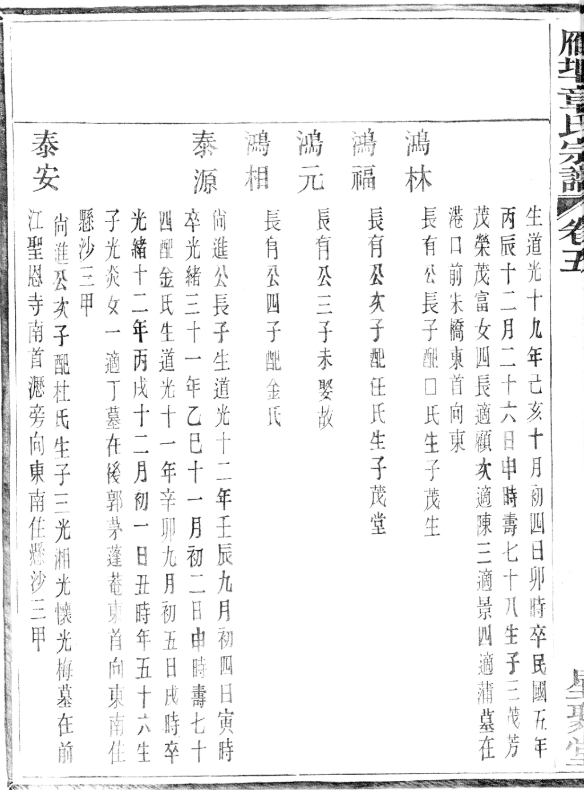
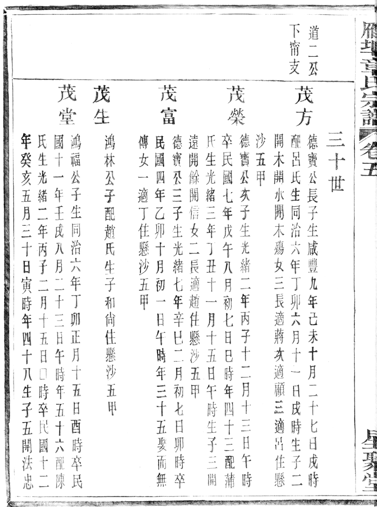
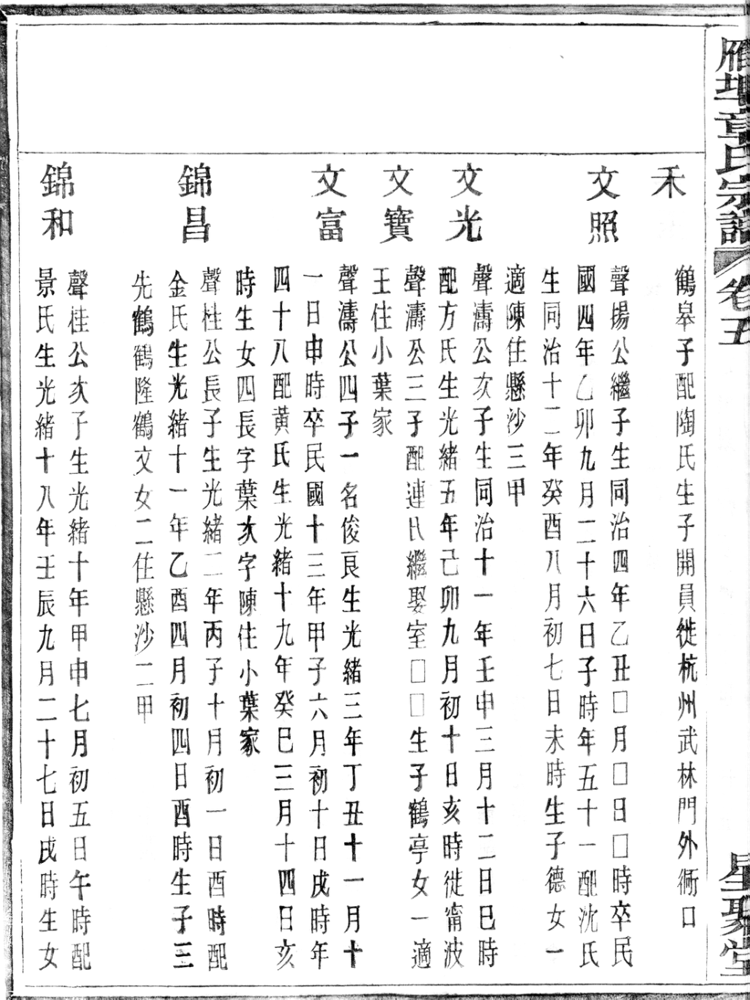
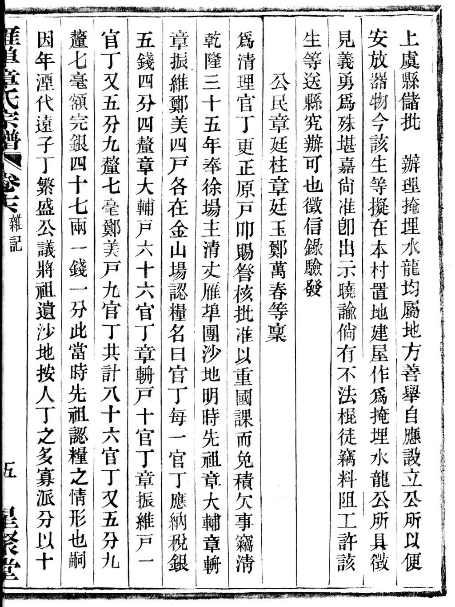

引子： 旧志记「后因沿江成村落曰悬沙 ，设有头、二、三、四、五甲村 」。
这串「甲」字地名从哪来？为什么和章家绑在一起？
〇、一句话结论
「悬沙」与「头甲～五甲」都不是村民自取的名字，而是盐场的化石地名。
「悬沙」 ＝ 盐民煎盐的「盐舍」 （一说作「盐涂」 ）之讹——本是盐场滩涂；「甲」 ＝ 宋以来盐务「灶甲制」 的编灶单位（《宋史·食货志》：「自三灶至十灶为一甲」，甲之上为团 ）。
而这一整套盐场地名之所以和章家绑定，是因为——章氏就是这片沙地上最早的垦殖者、也是最大的认粮户 。
今「内五甲村」「外五甲村」的官方地名由来，直接写着：
「据《章氏宗谱 》记载，始祖章氏移居曹娥江边垦植，筑舍定居而成村落 。」
博雅地名网 / 百度百科「外五甲村」条
一、「悬沙」三个字怎么来的：三说并陈
说 出处 要点
① 盐舍说
〈上虞地名琐议〉（越牛新闻 2024-03-05）；〈昨天的百官——「悬沙」源自「百官盐舍」〉
盐民煎盐，灶上须搭篷草竹木之棚舍，谓之「盐舍 」（个别地方叫「篷芦厂」）。煮盐改晒盐后盐舍拆除，只剩白茫茫沙地，「盐舍」「悬沙」方言音近 ，遂讹作「悬沙」。★ 佐证：古上虞地图十都百官标有「金山场盐课大使署 」与「百官盐舍 」；今曹娥街道的「上沙／下沙／新沙」本应作「上舍／下舍／新舍」。
② 盐涂说
《虞你说地名·上虞地名文化寻迹》（上虞区民政局编，中国文史出版社 2023，p123）
「该地约在 200 年前为曹娥江河床，水流潮顶，泥沙淤积，称作『盐涂 』，俗称『悬涂 』。」
③ 淤沙说
83 版《上虞县地名志》；〈「悬沙」之变〉（浙江日报 2019-02-12）
「曹娥江泥沙淤积……属于土壤松软的夜潮地，故称『悬沙』。」
三说其实同指一事：这是一片盐场滩涂。 前两说给出了「盐」字的本源（盐舍 ／盐涂 ），第三说只是描述地貌，没有回答「悬」字何来。
所以「悬沙」的本义是「盐舍（盐民的草棚）」——一个盐业地名。
二、「甲」是什么：三说并陈，其实一脉
说 出处 要点
① 盐务灶甲说
《宋史·食货志下四》；〈场、团、灶：盐业生产的组织〉（今日象山数字报）
「自三灶至十灶为一甲 」；甲之上的组织是「团」 。宋熙宁以保甲法推行于盐户，遂有「灶甲制 」，小头目称甲头／甲首／灶首；「一灶之下，无虑二十户」；明初行「聚团分煎法 」；清雍正六年（1728）两浙盐区设盐务保甲。组织链：盐司 → 场 → 团 → 灶 → 甲 。
② 神会社甲说
83 版《上虞县地名志·娥江公社》
「据查，明末清初，居民陆续来悬沙定居，以神会社甲 编制，分别列作村名，此村居其首位，故名头甲。」
③ 民国保甲说
〈「悬沙」之变〉（浙江日报 2019）
「1934 年，始于宋代的保甲制在全国推行。散居农户 10 户编成一甲，悬沙设头甲、二甲、三甲、四甲。这些甲名，从此就成为村名。 」
〈上虞地名琐议〉（2024）明确驳②：
「这个解释是不对的。此『甲』为古盐务编灶给丁的基本单位 。《宋史·食货志下四》：『自三灶至十灶为一甲。』甲之上的组织是团。 是故，言其为『社甲编制』尚可，言其为『神会社甲编制 』就离题万里了。」
三说可以调和 ：「甲」本是盐务单位 （宋元以来）→ 沿用为聚落与户籍单位 → 民国保甲制再沿用其名 。
所以「头甲～五甲」是盐业留给地名的化石 ，与「场（曹娥场）／仓（盐仓桥头）／埠（四埠）／舍（新舍）／厂（上厂）」等上虞地名同一来源。
三、头甲 → 五甲 是怎么排的
沿曹娥江，自东南（上游）向西北（下游）顺序编号：
百官（上游） 吕家埠（下游）
头甲 ── 二甲 ── 三甲 ── 四甲 ── 五甲 ── …
（今百官街道头甲、二甲、四甲社区…） （内/外五甲村，今崧厦街道）
悬沙片范围 （2023《虞你说地名》）：东南起百官街道中利村 ，西北至崧厦街道吕家埠 ，南临曹娥江，北依百沥海塘，总面积 15.64 平方公里 ；为原头甲、二甲、三甲、四甲、燕子窠、大王家、小王家 7 个自然村之总称。内外五甲的分界 ：以沙塘 为界，塘内＝内五甲 ，塘外＝外五甲 （今两村并存于崧厦街道）。
★ 顺解一个疑问：「三甲」今天为什么从地图上找不到？
1961 年组建头甲（含大、小王家）、二甲（含三甲）、四甲（含燕子窠）三个生产大队 ——三甲村并入了二甲大队 ；2006 年三甲渡停渡 （三环大桥建成后失去作用），而那座桥只叫「三环大桥／梁祝大桥」，无一字承「三甲渡」 。
→ 村名并入、渡名无桥继承，「三甲」遂从地图上淡出。反过来，「五甲」因 1995 年五甲渡桥、2013 年五甲渡大桥、2025 年五甲渡城市公园 层层承名，至今可检索。同一片沙地，一个名亡、一个名存。
四、★★★ 和章家的关系：六重证据
4.1 官修地名志直接引《章氏宗谱》★
「内五甲村 」「外五甲村 」的地名由来（博雅地名网 / 百度百科），原文：
「始祖章氏 移居曹娥江边垦种，筑舍定居，形成村落，按神会社甲编制，分别列为村名，在堤内（外）第五甲 ，故名。」
更详的一版：
「外五甲村原是曹娥江边冲积而成的沙滩，俗称悬沙。据《章氏宗谱》记载，始祖章氏移居曹娥江边垦植，筑舍定居而成村落。 依曹娥江，自百官头甲、二甲、三甲、四甲顺序排列，其位居五甲。」
——五甲村的「开山户」是章氏，这一条写进了官修地名志。
4.2 谱内实测：族人就「住悬沙二甲／三甲／五甲」★★★ （本次新挖）
在册 05、册 07 世录里，逐条检得章氏族人「住悬沙」的记载如下：
房派 · 支派 世次 册 / 页 人名（与记载） 住地
相房 · 炫三公兌支派
二十八世
册05 卷五下申集 p29、p39、p56、p57
珊貴公長子松林、次子松臯；增福公次子永茂；增壽公長子永金；增書公次子永春；永順公子、永茂公子、永金公長子／次子
懸沙三甲
聰房 · 泰二公支派
三十二世
册05 卷五下申集 p160、p174、p175
福順公子紀有（配葉氏，生子松臯、松亭）、紀有長子、次子松亭
懸沙
安房 · 道二公下鎭字甯支派
二十九～三十世
册07 卷五中午集 p37–p66 等多处
泰源、泰安、泰福、泰和、泰貴、泰榮、光炎、光湘、光懷、光梅、光揚、光德等
懸沙三甲
同上
二十九～三十世
册07 p45、p46、p56、p57、p66、p154、p181、p198、p199
德寶公三子茂方、茂榮、茂富；鴻林公子茂生；茂堂公長子等
懸沙五甲
同上
二十九～三十世
册07 p51、p52、p63
先鶴、鶴隆、鶴文等
懸沙二甲
两个要点：
谱内出现的甲名只有「二甲、三甲、五甲」 ——恰是章氏聚居处；头甲、四甲未见记载 。住悬沙的是 相房兌支、聰房、安房甯支 三房——没有相房俊支（你家） 。你家受田公一房谱内无「住」注，即世居雁埠本地 （章家村／正宗庵一带）。章氏是各房散居：一支迁悬沙垦沙，一支留雁埠守祖。
附带一处地标：册07 记泰安「墓在前江聖恩寺 南首瀝旁向東南」，光懷「墓在前江聖恩寺 東首」——「前江」即今崧厦前江村 （悬沙片东界所依的百沥海塘即在前江）。这是谱内又一处可与今地对应的小地名。
4.3 章家义渡 → 三甲渡：渡口建在章氏聚居的三甲
谱卷十三：「章家義渡 ……其創設爲咸豐十年 ……渡之田產有四十餘畝 ……毋論遠近客商概不准收取分文 」。
〈三渡六桥说今古〉：「该渡由清代章氏里人章長慶 、鄭國彪等捐田而設……因渡口近三甲村 ，而改稱三甲渡 。」
→ 章氏住三甲，所以章家义渡在三甲，渡口改名三甲渡。 人名（章長慶）、事由（捐田设义渡）、地名（章家义渡→三甲渡）三项全对。
4.4 章氏是雁埠团沙地的第一认粮大户
谱卷十六〈丁地考〉原文：
「雁埠團分內外十戶 ，內戶二百七官丁 ，外戶二百七官丁 ，共四百十四官丁 。每一官丁約地三十畝，納稅銀五錢四分四釐。除各戶外，我先祖章大輔户六十六官丁、章輈戸十官丁、章振維戸一官丁又五分九釐七毫 ……總計地二千三百畝有奇……均在金山場轄下承糧 。」
册10 卷十六〈丁地考〉
「乾隆三十五年奉徐場主清丈雁埠團沙地，明時先祖章大輔、章輈、章振維、鄭美 四戸，各在金山場 認糧，名曰官丁……章大輔戸六十六官丁、章輈戸十官丁、章振維戸一官丁又五分九釐七毫、鄭美戸九官丁，共計八十六官丁又五分九釐七毫。」
章氏三户合计 77.597 官丁 ；章大輔一户即 66 官丁 ，占全团 414 官丁的约 16% ——团内第一大户（外姓郑美仅 9 官丁）。
★ 「内外十户」（谱内赋役单位）与今「内外五甲」（村名）的内外二分法完全一致。
4.5 谱外文献直接点「章三畏」的名字 ★
〈「悬沙」之变〉（浙江日报 / 浙江新闻客户端 2019-02-12）：
「清咸丰七年（1857），崧厦贤达连仲愚、章三畏 等组织沙墙董事会，前后 20 年，创修加固沙墙 3600 丈 。」
谱内对得上，三项全合：
谱有〈章三畏公傳 〉（钱景錡撰）：「公諱東序 ，字三畏 ，章姓，清國學生，乃泳公第三子 也。性康爽，善賈兼精醫理……」传首即写「世居虞西雁埠，地瀕娥江下游，江水數數爲患 」。
谱卷九：「咸豐七年知縣劉書田與連仲愚先生商水利，仲愚先生用三畏公議 創修臨江大牆 ……東與後郭……」；卷十：「工長三千六百丈 」。
→ 人名（章三畏）、年份（咸丰七年）、工长数字（3600 丈）三项全对。 （章三畏属老房 · 裕四公下 · 斌一公 · 隆二公前支派——册04 卷五上辰集。）
4.6 外五甲村今仍以章姓为主
〈外五甲村——曹娥江畔的一颗明珠〉（乡土文化网）：「相传明末清初，该村始祖章氏 为了养家糊口，来到这里开荒定居 。随后西华、吕家埠等地村民也陆续来此生活……村里以章姓为主 ，众姓并存。」（今 270 户 770 人，耕地 1100 亩）
《丁地考》：清顺治五年（1648）「山寇宣岳等聚众数千从娥江劫舟而下，沿村焚掠索饷，西华顾奇勋、章家章振宇 等团结丁壮抗击」。
4.7 ★★★ 谱外新挖第一手原典：连仲愚《塘工纪略》（2026-10-10 增补）
《塘工纪略》 （连仲愚撰，上虞图书馆古籍库藏本，索书号 A1187 ）是 咸丰七年（1857）创修临江大墙 主事人的自记 ，即谱卷九、卷十那条治江事的上游原始文献 。全书 176 页已下载并做古籍 OCR，命中如下：
检索词 命中页（影像页）
章家村 p75 、p84 章三畏 p84 懸沙 p84、p85 臨江大牆 p85、p121 沙牆 p71、p81、p82、p83、p84、p121
p84 ：「大牆之舉，斯時也咸豐七年 也。劉公書田宰上虞 ，留心水利，與仲有同志，用舉章三畏君住章家村 ，習知水利，屢邀集村民修章家大坵及化旺坵 而不愜意，嘗畫坵𡓜圖數幅 ，出入必攜以相隨……朱彰德君住懸沙 ，屢苦大水，嘗謂仲曰：『莫如統築臨江一帶。』」p85 ：「……江流迅奔，海潮逆上，以致兩水相鬭，驟高一丈餘尺，烈風又助之以爲威，直攻懸沙新牆 。上沿有後郭坵 ，下沿有化旺坵 ，惟懸沙水勢突高四五尺 ，因西挑角挑出數百丈，江流洄曲所致，及孫家渡 ……」p75 ：「咸豐三年伏 〔汛〕……三日衝决缺口三个……〔咸〕豐元年加修老塘，失於〔防〕，潰章家村章愛二號 ，因霔洞不結實而潰。」
连仲愚《塘工纪略》影像 p75 / p84 / p85
四条新结论（均须回写本考）：
★★ 「章家村」在谱外文献里首次落实 ：此前谱内只作「雁埠」「章家」；1857 年《塘工纪略》直书「章三畏君住章家村」 ，且 p75 记 1853 年已「潰章家村……」 ——「章家村」作为村名可上推到 1853 年 ，与今崧厦街道章家村同名跨 170 余年。★ 「懸沙」地名前推 ：1857 年已有「朱彰德君住懸沙」→ 第三说「1934 年保甲制才成村名」须修正 ：地名（懸沙）早于保甲制，「甲」是再沿用 （详见 §六 修订 2）。章三畏的形像更立体 ：他「習知水利 」「屢邀集村民 」修章家大坵、化旺坵 ，且「嘗畫坵𡓜圖數幅 」——能集村民、能画塘图，正合「雁埠团第一认粮大户」的身份。沙丘（坵）名三种 ：章家大坵、化旺坵、後郭坵 ；另有渡堰名「孫家渡 」「王家堰 」，可与光绪志图 p0128 实地标注的「孫家渡」「賀家埠」对读。
同书另记「爲沙𡓜董事，齊心協力，定立章程：外坵沙派三工，裡坵沙地每畝派二工 ……而章、朱二董亦任勞任 〔怨〕」——可见章三畏是沙墙董事会里与连仲愚并列的两位董事 （章、朱），与浙江日报「连仲愚、章三畏等组织沙墙董事会」完全吻合。
影像：见同目录 塘工纪略影像\01–04*.png（p075／p084／p085／p086 四页）。
五、时间线：一个盐场地名的八百年
宋
曹娥盐场 · 灶甲制
竹盘煎盐（明弘治《绍兴府志》「郡之所产，常以竹盘烧之」）；灶甲制 （自三灶至十灶为一甲）。
明崇祯
筑备塘，悬沙始具垦殖条件
绍兴太守王期升 沿百沥海塘西侧筑备塘（分丘沙墙 ）。
清乾隆五年（1740）
金山场由曹娥场分设
场署驻百官镇 ，因金鸡山 得名；辖境延袤 45 里。
清乾隆三十五年（1770）
清丈雁埠团沙地
徐场主清丈，章大輔 等认粮为官丁。
清咸丰七年（1857）
创修临江大墙
连仲愚＋章三畏 创修临江大墙 3600 丈。
清咸丰二年起
盐舍拆除，「盐舍」讹作「悬沙」
泥板晒盐 → 板晒、滩晒，灶煮渐废 ；民国初「灶」绝迹，盐舍拆除 。
1940
分内五甲／外五甲
前江金奎元筑沙塘（王公沙塘 ）。
1961
三个生产大队
头甲（含大小王家）／二甲（含三甲 ）／四甲（含燕子窠）。
2006
三甲渡停渡
三环大桥建成，「三甲」淡出地图。
今
两街道分辖
百官街道：头甲、二甲、四甲 社区＋悬沙社区；崧厦街道：内五甲、外五甲 村。
六、存疑与待核（如实并陈）
雁埠团 vs 悬沙，是否同一片 ：2023《虞你说地名》称悬沙片东南起百官中利村、西北至崧厦吕家埠（15.64 km²），与《丁地考》所记雁埠团四至（崧厦百沥海塘以南，东至陆家村，西至吕家埠）部分重叠、边界不一 。两者是同一片沙地的两套命名体系（谱用赋役名「雁埠团」，民间/今志用地理名「悬沙」），但精确吻合度待核。「甲」的三说虽可调和，仍有张力 ：「头甲～五甲」究竟是宋元盐场灶甲 的原生地名，还是民国保甲 新立的村名（浙江日报说），两说各有文献支持，需再检清代方志村落名。【2026-10-10 修订】 已检《塘工纪略》（1857）：「懸沙」在其时已是聚落名 （「朱彰德君住懸沙」），「章家村」更早至 1853 年 （p75）。故「甲」非 1934 年保甲制所新立 ；「甲」的本源应回到盐务灶甲／社甲 ，1934 年保甲制只是再沿用其名 。前引浙江日报「1934 年始有甲名」之说宜降为「甲名作为行政村名固定下来」的时点 ，而非创名时点。（依据见 §4.7）光绪《上虞县志》卷二十九所引曹娥场「百官、寫步、東南等團 共竈二十四條」——「寫步 」疑为「雁步（雁埠）」或「瀝步」之讹，待核原书 。
内外五甲分界的沙塘名，百度百科作「黄公沙塘 」、浙江日报作「王公沙塘 」（1940 前江金奎元筑，纪念太守王期升 ）——是否同一塘，待核。
「悬沙」片今主要属百官街道 ，而内外五甲属崧厦街道 （2012 起曹娥街道托管）。谱内「住悬沙二甲／三甲／五甲」诸人具体居今何村，需族属与实地再核。
头甲、四甲未见谱载 ——是章氏确无人居此，抑或漏记，待核。
七、原始影像（点开可放大核对）

册05 p29 · 相房兌支「住懸沙三甲」 
册05 p160 · 聰房「住懸沙」 
册07 p37 · 安房甯支「住懸沙三甲」＋前江聖恩寺 
册07 p45 · 安房甯支「住懸沙五甲」 
册07 p51 · 安房甯支「住懸沙二甲」 
册10 p114 · 雁埠團沙地·金山場認糧
八、来源清单
谱内 ：册05 卷五下申集 p29／39／56／57／160／174／175；册07 卷五中午集 p37–66／154／181／198–199；册04 卷五上辰集 p54–55（章三畏本传）；册10 卷十四〈章三畏公傳〉p66–67、册09 卷九 p113–116（临江大墙）；册10 卷十六〈丁地考〉p114–117。
谱外 ：
★ 连仲愚《塘工纪略》 （上虞图书馆古籍库藏本，索书号 A1187 ；含续、三续）——影像 p75「潰章家村」、p84「用舉章三畏君住章家村」·「朱彰德君住懸沙」、p85「直攻懸沙新牆」、p86「孫家渡」【2026-10-10 新增】光绪《上虞县志》卷首「縣境全圖」八幅（同上书库藏本，整册 182 页）【2026-10-10 新增】
〈上虞地名琐议〉，越牛新闻，2024-03-05
〈昨天的百官——「悬沙」源自「百官盐舍」〉，新浪博客
《虞你说地名·上虞地名文化寻迹》（绍兴市上虞区民政局编，中国文史出版社 2023，p123）
〈「悬沙」之变〉，浙江日报／浙江新闻客户端，2019-02-12
博雅地名网：头甲社区、四甲社区、内五甲村、外五甲村、章家村、崧厦街道各村社区地名由来
百度百科：外五甲村、金山场、盐保甲、亭民
〈外五甲村——曹娥江畔的一颗明珠〉，乡土文化网
夏军波《丁地考——以上虞金山盐场「雁埠团」为例》
光绪《上虞县志》卷二十九·食货志（Wikimedia Commons 藏本）
《宋史·食货志下四》
〈场、团、灶：盐业生产的组织〉，今日象山数字报，2015-03-24
〈金山盐场的竹盘煎盐〉，上虞论坛
悬沙 · 头甲至五甲 地名考 ｜ 据《上虞雁埠章氏宗谱》（民国十四年乙丑·1925 印本）与谱外文献互证